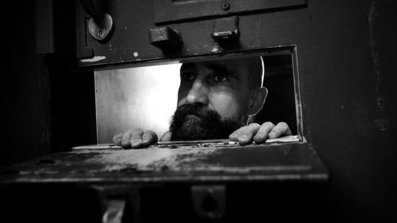
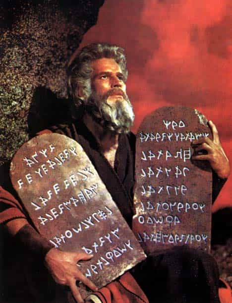

< < < Back
A Red Pill Perspective On The Existence Of God – Return Of Kings
Throughout human history there have been a plethora of polarizing debates. From benign arguments like vodka versus whiskey and split routines versus compound lifts to the ultra critical like pro life versus pro choice and most recently, Hillary versus Trump, there has never been a shortage of issues that split even the tightest knit groups into opposing factions.
One of the most divisive topics of all time is religion—more specifically the very existence of God. Now before I get started, I’ll go ahead and let everyone know that I have nowhere near the theological knowledge or brawn of my colleagues Quintus Curtius or Arelius Moner. If you’re looking for a deep ecumenical analysis of religions the world over, you won’t find it here.
Instead, I’m going to examine the existence of God from an everyday man’s point of view. This will be a simple, logical look into what we’ve been told about various religions (namely Christianity) our entire lives and will ask a few straight forward, pointed questions regarding the events of the past in terms of their validity and plausibility.
When men find the red pill everything is called into question. Relationships, money, fitness, and everything in between are all scrutinized more closely and nine times out of ten, we make significant changes in most if not all of those areas. Personally, religion also falls into that category and at this point in my crimson capsule renaissance I’m starting to query just about every element of my religious beliefs as they apply to my new found knowledge about the way the world really works.
As stated earlier I’ll talk about these things mainly from a Christianity point of view as it’s the religion I was raised with and know the most about.
The basics of religion
As far as I’m concerned, the basis of most religious groups are all pretty much the same. Exercising some sort of self discipline by not indulging in life’s many tempting vices, treating others with decency, and regularly executing some sort of ritual at a specific day and/or time. Sure, there are many more layers to every religion but by and large those seem to be the main building blocks.
The truth is, human beings have an inherent need to belong. No matter the person, upbringing, or environment we all want to be a part of something. Without human interaction we go insane. Even people who describe themselves as loners have a circle of friends, albeit very small, they trust and can confide in. From young men who join gangs to post wall sluts to people who join cults, ‘religion’ in this context is a way for people to fulfill their basic need for routine, temperance, and structure.

We all want to feel like we’re a part of something
Think about this: The worst thing that can happen to a man in prison (other than being raped) is being put in solitary confinement. He’s surrounded by murders and rapists but being put in the hole for a month is a terrible fate because he’s left by himself for an extended period of time. Religion represents going back to the general population for most everyone.

‘The hole’ will drive a man crazy because of lack of human interaction. It’s probably the highlight of his day when the guard slides his slop under the door.
Sports, hobbies, and even those evil misogynistic websites that brainwash men into thinking women are demons from the seventh circle of hell are all described on some level as a religion. People say all the time “I do xyz religiously” when describing something they do on the regular.
Regardless of what we call it anything we do or believe consistently could loosely be described as a religion.
The depravity of modern Christianity
For my money Christianity seems to be the branch of religion that has soured the most people on the existence of God. I’ll be the first to point out that I could be way off in this assessment and that my upbringing in the Baptist church and being an American drastically skews my point of view but I’m certain I’m not the only person who feels this way.
I could write a three-part column on how Christians have royally fucked things up for people who could really benefit from religion but instead I’ll talk about the major factors involved with making Christianity and its followers borderline unbearable.
Dollars and sense
Anyone who grew up going to church remembers the collection plate being passed from row to row by the ushers. We remember person after person putting in cash, checks, and envelopes as the plate made its way through the congregation. It wasn’t long before we asked our parents what that was for and they dutifully explained to us that the church is supported by its members’ contributions and that’s why they passed the collection plate around every Sunday.
Things could not be more different in 2016. The ‘mega churches’ popping up every week don’t even look like churches anymore. Inside and out they resemble something of a cross between a warehouse, a night club, and a mall. Churches like these cost money and lots of it.
With jumbo trons, flat screen tvs, and state of the art tech as the backdrop, these places seem more intent on entertainment than the teachings of Christianity. They also reek of SJW tendencies what with their ‘No judgement here!’ and ‘Non-denominational’ marketing campaigns to cast as wide a net as possible to ensnare as many members as they can get.
Is this a church service or the NBA Finals?
Yes, churches need support from it’s congregation and yes, they have to get the word out somehow. But when you’re bombarded with billboards, flyers, and even television commercials then see the pastor driving a six figure vehicle and living in a seven figure home it becomes crystal clear that Christianity is more of an industry than a religion and that’s what rubs people the wrong way.
“God has a plan”
Ever heard this before?: “God has a plan for you!” or “If it’s God’s will it, will happen.” or “The Lord works in mysterious ways.”
Post red pill awakening I’ve figured out that Christians and its purveyors often use this rhetoric to explain away terrible or unfavorable events. One could say that people need to believe that there is a higher power out there that makes things happen.
The neomasculinity in me, however, knows that if I show up to an interview for a job in casual clothes I’m not getting that job. The red pill mindset I have knows that if I’m drunk off my ass and I get behind the wheel and wrap my car around a telephone pole, or worse, kill somebody it has nothing to do with ‘God’s will’ and that it’s my responsibility and mine alone.
Is God ‘testing’ me or did I just make a bad decision?
Back in the day the one I noticed that all atheists seemed to have in common was anger. They were angry that God had ‘allowed’ their loved ones to die or that God had ‘allowed’ their husband to be stricken by cancer or that God ‘allowed’ bad things to happen to them. A lot of them may have even been Christians at one point or another.
My guess is that during their hard times their Christian friends reached out to them to try to console them and good for them for doing so. Where they went wrong is that they probably used the ‘God’s will’ to explain the untimely deaths of their loved ones. It’s only a matter of time before someone going through that kind of turmoil enters the anger phase and because the people around them told them that God had indirectly caused their pain, they check out.

Most atheists don’t fit this stereotype anymore
The counter argument there is that just because a person is angry and decides they don’t believe there’s a God doesn’t mean there isn’t a God. I used to say all the time when yelling at atheists on television ‘Just because you don’t believe it doesn’t mean it’s not true!’
The bottom line here is that every person has control of their own life. I’m not saying that this means there is God or that there isn’t. What I am saying is that if a person is successful, it’s mainly because of their own efforts and know how. If a person is or was ever homeless, it’s largely because of a series of bad decisions. I’ve talked and written about my own series of bad decisions that led me to quasi-homelessness and I had nobody to blame but myself. Not God, not anyone…myself.
When a man looks at this through his crimson capsule spectacles, the ‘plan’ and ‘will’ arguments closely resembles hamstering. When someone tells you that a good or bad event in your or someone else’s life has more to do with the actions or desires of someone or something other than your own, it’s eerily similar to a female blaming her bad decision making on the 14 tequila shots she did the night before.

Is this untimely plus sign God’s plan or is it the result getting drunk and having unprotected sex?
There are a plethora of other issues that gives Christianity a bad name world wide. From the Christians themselves who are in the club Saturday night then in the front row at church Sunday morning to the conflicting versions of the Bible different denominations use to pick and choose what they want to abide by, Christianity is looked down on a lot of people for many reasons.
As far as I’m concerned, the priority of exorbitant profits trumping the importance of their message and the epic hamstering involved in and out of the pews are the two biggest reasons it has a bad name.
The staples of Christianity called into question
Over the years I’ve begun to call into question the so-called strongholds of Christianity. Things I’ve been taught as absolute truths now make a lot less sense because I’m older and more experienced. My red pill conditioning has also contributed to my rethinking these things.
Does prayer really change things?

Does this really make a difference?
Am I not in complete control of my own life? Is being disciplined and steadfast in my daily regimens useless if I have the power of prayer on my side? If I pray, then work hard and become successful what percentage of the credit goes to whom?
How do we know what or how God thinks?
Everyone seems to think they know how God thinks and the reasons he thinks them. How do we know God is a loving and kind? How do we know God even wants us here? How the hell do we really know why God does what he does simply because we can refer to a 2000 year old book (the Bible)?
Would we believe in a virgin birth in 2016?
Would Mary ever sit in front of this guy to prove her virgin birth claims?
If a woman in the Middle East gave birth and claimed to be a virgin would we really believe it? Would she be opposed to a DNA test to reveal who the suspected father really was? Would an examination pre-birth reveal an in tact hymen? And even if it did, would we believe it?
Did Gabriel really come down and talk to Mary?
Did Mary and Gabriel really have a conversation or was Mary hallucinating? Or worse, did she make the whole thing up? After all, back then it was impossible to become pregnant without having sex.
Was Jesus Christ really the son of God?
Speaking of that DNA test, what would that reveal? Would the father’s DNA be ‘other worldly’ or ‘alien’ or would it reveal the DNA of a male homo sapien?
Do we really believe the stories?

Did God really etch the Ten Commandments in these tablets or did Moses do it himself with a chisel in 40 days and 40 nights?
Do we really believe that Red Sea literally parted for Moses? How feasible is it that an old man climbed to the top of a mountain, stayed there for over a month (40 days and 40 nights) to wait for God to etch the 10 Commandments into stone? And how did God do that?
Do we believe a man got swallowed by a whale and survived long enough to get spit back out?
We all know the story about Jonah and the whale but how likely is it that a man swallowed by a whale or big fish would survive, let alone get spit back out? Why would the whale even do that? Was it bulimic?
Do we really believe that Jesus literally walked on water?
Think about it. People are claiming a man walked on the water’s surface and didn’t sink in. Would we really believe that in 2016??
Would anybody believe these stories with this kind of tech available to them back then?
I’m not saying these things didn’t happen but based on what I’ve learned and experienced, it’s highly unlikely. If the science and technology available to us today were available to us back then, I’m fairly certain these stories would have been debunked fairly quickly and that’s if the stories got out in the first place.
Are you saying you’re an atheist?
Absolutely not. When I apply the same sensibilities, knowledge, and experience of my 39 years of life, I know that at some point up the chain of creation there is an uncaused cause. I believe that to be the deity we call God, Allah, or whatever name we attach.
The Universe didn’t create itself
But at this point in my life I’m not nearly as certain the God I’ve been taught about by Christianity exists. I believe there’s a God but not the God I’ve grown up believing in. If a strip club burns to the ground, I don’t believe God ‘rained down fire to punish the heathen sinners’. My guess is either arson or somebody flicked a cigarette in the wrong place.
If someone’s successful I don’t use the word ‘blessed’ anymore. I use the word ‘fortunate’ and ‘hard working.’ If someone has a run of bad luck, it’s ‘shit happens’ and ‘bad decision making’ and that’s all there is to it.
Conclusion
At the end of the day I’m willing to admit that religion certainly has its advantages. Quintus and Arelius have pointed out countless red pill doctrines from back in the day that kept women in line. Like it or not Muslims have their women in check. Their females rarely get out of pocket thanks to the quran.
But even the most devout Catholics, Muslims, Buddhists, Christians, etc. would have to admit what nobody’s ever really discussed: They can’t all be right.

Both are devout, and might even like each other but they both can’t be right
The Southern Baptist minister in Lexington, Kentucky is every bit as devout as the Hindu Priest in Mumbai, India. But they can’t both be right.
Hopefully in the coming years I can gain a little more clarity in terms of what I believe and what I do not. For now, I’ll keep living my life and let the chips fall where they may.
Hear me elaborate on this in more detail on The Sharpe Reality, Episode 7: A Red Pill Perspective On The Existence Of God. Check out new episodes every Tuesday at TheSharpeReality.com.
Read Next: What Is The Essential Purpose Of Prayer?